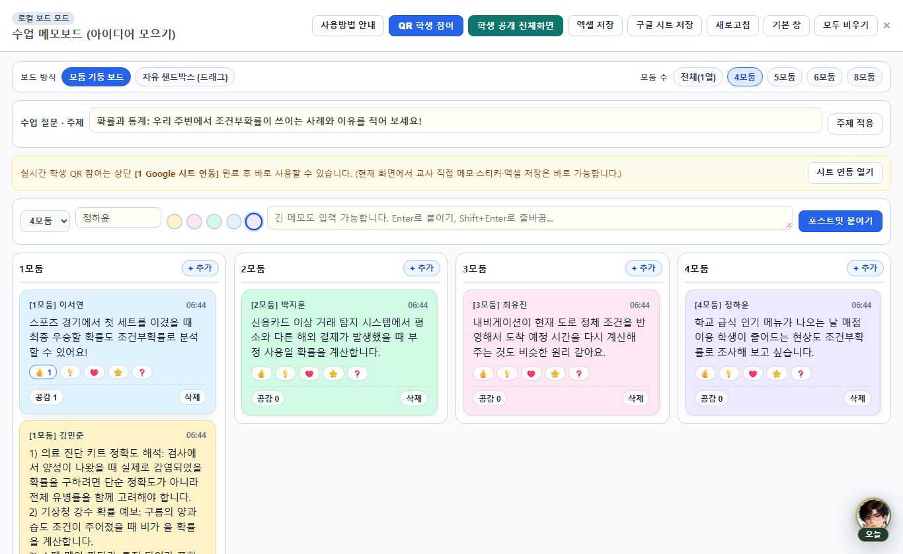
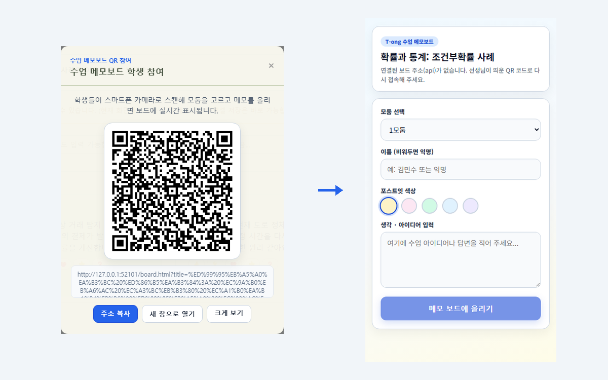
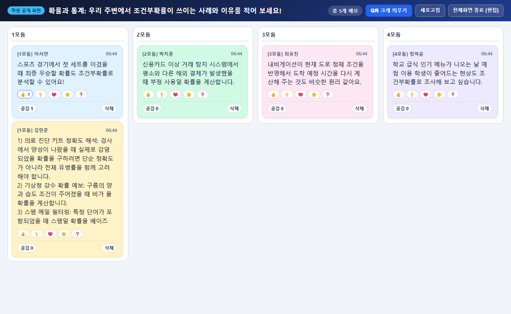
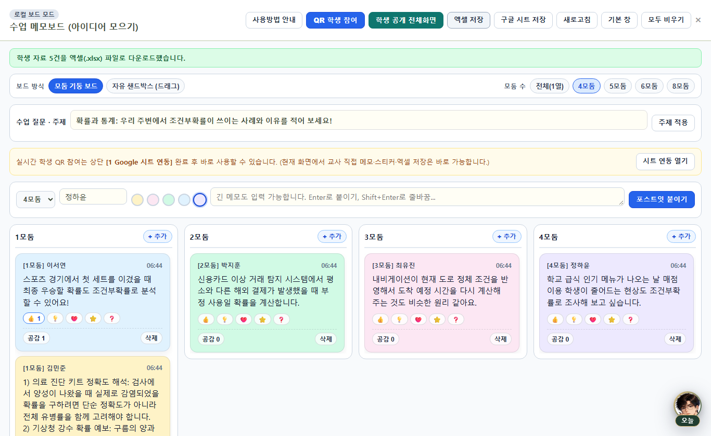

STEP 1
보드 방식 · 모둠 수 · 수업 질문 설정하기

교사가 할 일
7 수업 도구→수업 메모보드를 엽니다.모둠 기둥 보드(4~8모둠) 또는자유 샌드박스(드래그)를 선택합니다.- 수업 질문·주제를 입력하고
주제 적용을 누릅니다.
활용 팁
- 모둠 토의 결과 정리는
4~6모둠 기둥 보드가 가장 깔끔합니다. - 브레인스토밍 아이디어를 비슷한 내용끼리 묶을 때는
자유 샌드박스로 전환해 드래그하세요.
STEP 2
QR 학생 참여 띄우고 실시간 의견 받기

교사가 할 일
- 상단
QR 학생 참여버튼을 눌러 교실 TV에 QR 코드를 띄웁니다. 크게 보기를 누르면 뒷자리 학생도 쉽게 스캔할 수 있습니다.
학생이 할 일
- 스마트폰 카메라로 QR을 스캔해 학생 참여 화면에 접속합니다.
- 모둠·이름·포스트잇 색상을 고르고 의견을 입력해 제출하면 4초 이내에 교실 보드에 올라옵니다.
STEP 3
학생 공개 전체화면으로 함께 보기 & 긴 메모 스크롤

교사가 할 일
- 상단
학생 공개 전체화면을 눌러 교사용 편집창을 숨기고 보드 전체를 화면 가득 띄웁니다. - 긴 메모는 카드 안쪽 스크롤바로, 메모가 많은 모둠은 기둥별 스크롤바로 끝까지 읽어줍니다.
수업 중 상호작용
- 포스트잇 하단의
스티커와공감버튼을 눌러 우수 아이디어에 피드백을 남깁니다. ESC키 또는 우측 상단전체화면 종료 (편집)으로 언제든 편집 모드로 돌아옵니다.
STEP 4
학생 자료 엑셀(.xlsx) · 구글 시트로 저장하기

엑셀(.xlsx) 다운로드
- 상단
엑셀 저장을 누르면 수업 주제·모둠·작성자·메모 전문·공감·스티커·작성 시각이 표로 정리된.xlsx파일이 즉시 저장됩니다.
구글 시트 자동 저장
구글 시트 저장을 누르면 마스터 시트의수업메모보드_기록탭에 자동 기록됩니다. (미연동 시 복사 후 새 시트 열기)- 세특 작성이나 수행평가 참여 근거 자료로 바로 활용하세요.